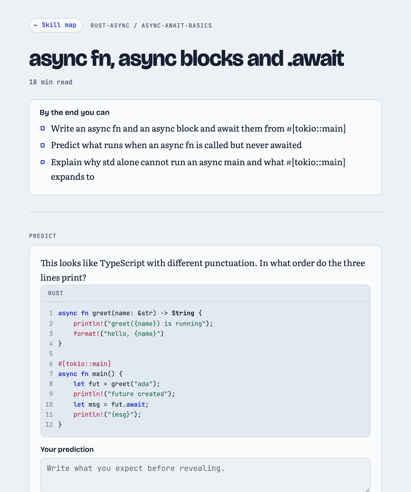
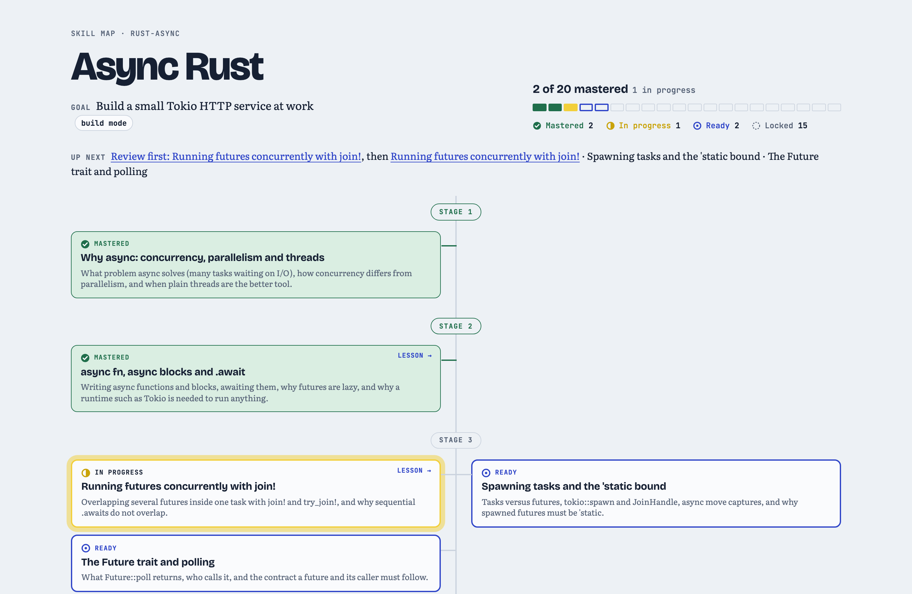
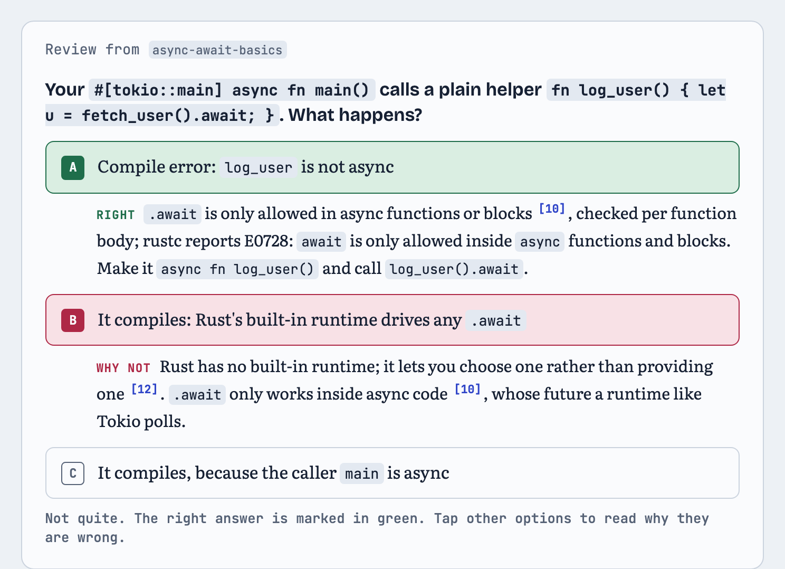
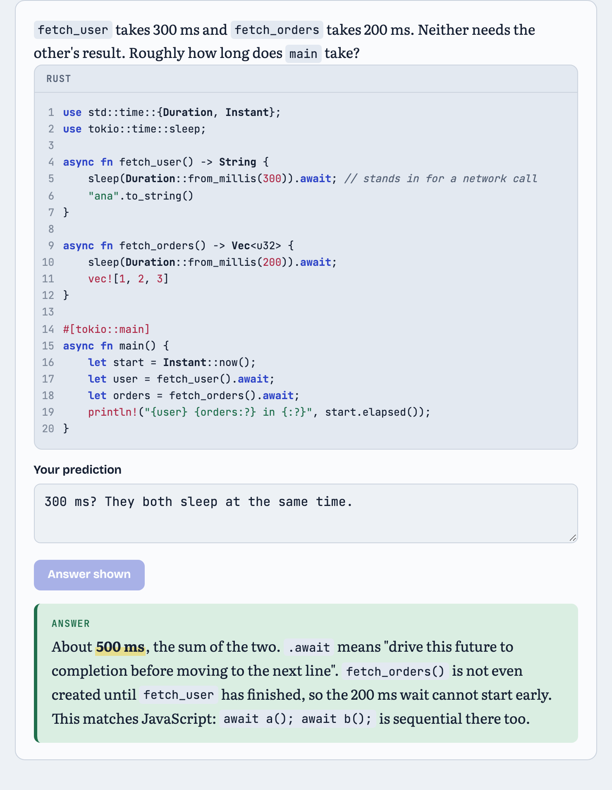
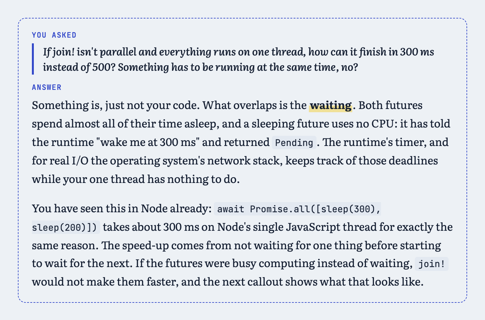
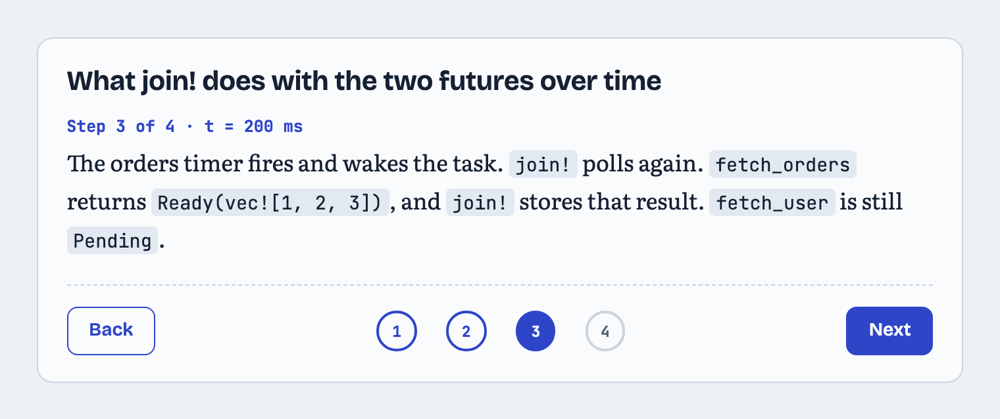
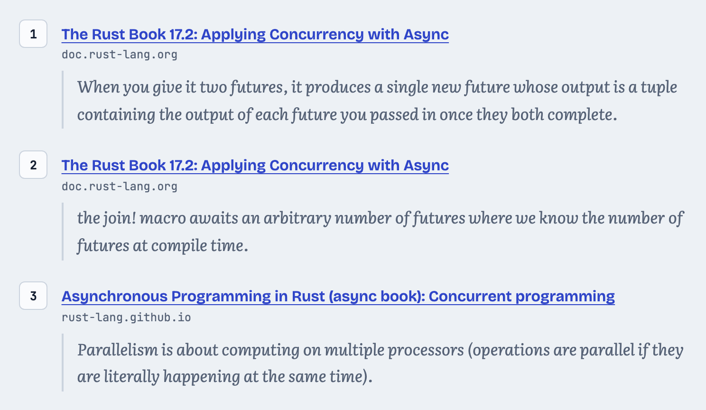
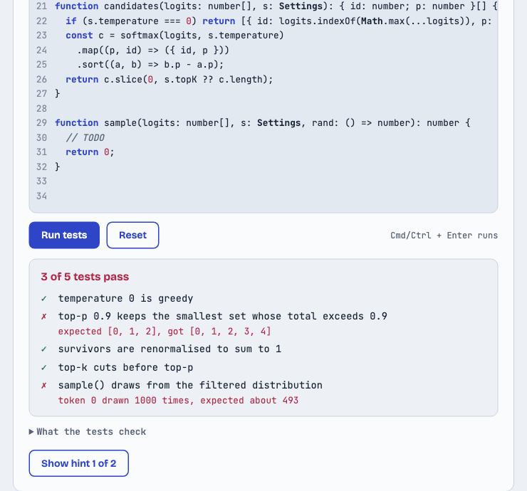
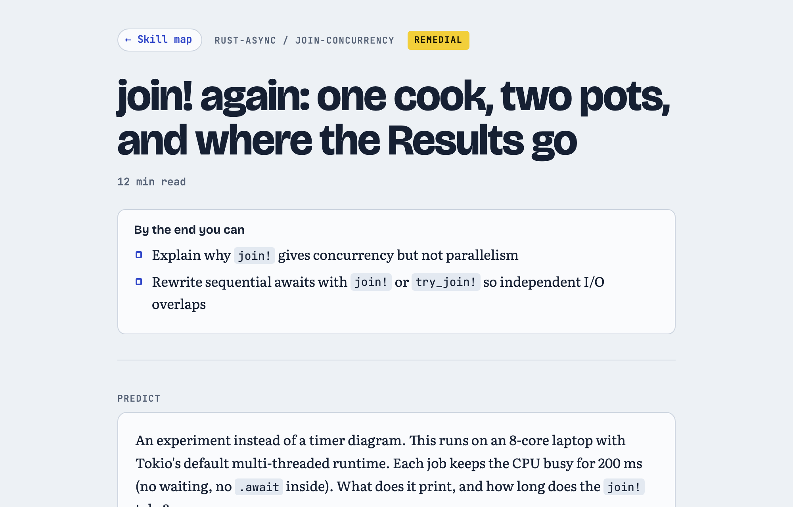

Short, interactive lessons
Written for your background and style, with objectives up front and an honest reading time.

Agent skill · Node 20+ · zero dependencies
It plans your whole learning path up front, writes each lesson just before you need it, and rewrites the next one around what you got wrong.
npx skills add anup-a/roadmap-ai -g -a '*'

Why
| Static roadmaps | Asking a chatbot | roadmap-ai | |
|---|---|---|---|
| Whole path visible up front | Yes | No | Yes |
| Starts from what you already know | No | If you explain | Tested, not self-rated |
| Mastery is checked, not assumed | No | No | Quiz gate per topic |
| Next lesson adapts to your mistakes | No | Forgets | Yes |
| Ask about any line, answered in place | No | In a separate chat | Yes |
| Claims backed by quotes checked on the live page | No | No | Yes |
What a learner gets
Written for your background and style, with objectives up front and an honest reading time.

Passed the last gate but missed how #[tokio::main] works? The next lesson opens on exactly that.

Commit to a guess, then reveal. The answer speaks to the belief you probably brought with you.

Highlight a sentence and ask. The answer lands right under that line, and the misconception it reveals shapes the next lesson.

Steppers walk through the mechanism one state at a time.

A paraphrase fails the check. Only exact quotes ship.

TypeScript and JavaScript exercises open in an editor with tests. Each run shows which tests pass, what a failing one expected, and your console output. Infinite loops stop after 5 seconds, and your code is saved in the browser. Before a lesson ships, lp checks that the reference solution passes every test and the starter code doesn't.

A failed mastery gate gives you a review lesson that explains it a new way, not the same page again.

How it works
Only the current lesson and one prefetched lesson exist at a time. A lesson written on day 0 can't know what happened on day 3.
Writer agents fill a small lesson format. Pages are built from tested widgets, so a model can't ship broken markup.
Code proves each quote is really on its page. A grader agent judges whether each claim is true.
learner.json holds mastery per topic, gate attempts, open misconceptions and questions asked.
Install
npx skills add anup-a/roadmap-ai -g -a '*'Or clone it into one agent's skills folder:
git clone https://github.com/anup-a/roadmap-ai ~/.claude/skills/learnpath # Claude Code
git clone https://github.com/anup-a/roadmap-ai ~/.codex/skills/learnpath # Codex
git clone https://github.com/anup-a/roadmap-ai ~/.agents/skills/learnpath # shared folderThen ask your agent: “teach me async Rust” (or /learnpath where slash commands exist)
Requirements Node 20+ and curl. No npm install. Pages publish to byagent (npx byagent login once), or render to self-contained HTML. State lives in ~/.learnpath.
For agents
lp does the bookkeeping.Any agent that can run shell commands and write files can drive it. The full loop has run in Claude Code. Codex found the skill on its own and drove lp using only SKILL.md.
lp is the only way state changes. Every command prints one JSON object and exits 1 on failure.lp prompt <name> builds sub-agent prompts from the graph and learner model, and refuses to print one with an unfilled placeholder.lp validate-lesson and lp check-cites after every writer.# what to write next, and why
lp plan --graph "$G" --learner "$L"
lp prompt lesson --node future-trait \
--set OUT=lesson.json --out prompt.md
lp validate-lesson lesson.json
lp check-cites lesson.json
lp render-lesson lesson.json --out site/future-trait
lp gate score gate.json --answers 2,0,1,3What the first run taught us
A real Rust Book quote about trpl::join was cited for tokio::join!. The quote check passed; the compiler didn't. The grader now compiles code.
A lucky guess from JavaScript intuition would have skipped 5 topics. Right answers now need their prerequisites right too.
The gate writer put every correct answer first. lp gate prepare now shuffles options.
One miss triggered a rewrite of a 2,000-word lesson. A pass with misses now patches only the warm-up.
Compared with plain chat on the same lesson, plain chat was just as accurate on its first try, at about an eighth of the cost. roadmap-ai's edge is the gates, the learner model and the in-place answers. Read the write-up.
Live pages Skill map Lesson 1 Lesson 2, adapted Review lesson Plain-chat version